453 posts
2019 archive
December 2019
-
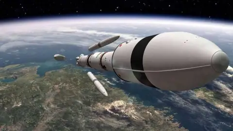
Science news · How far did Arab space research get in 2019? - Science news · Rwanda launches its first communications satellite and offers free internet to its citizens
-
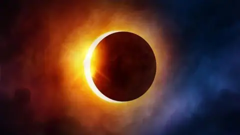
Science news · The year of darkness, 1371 -
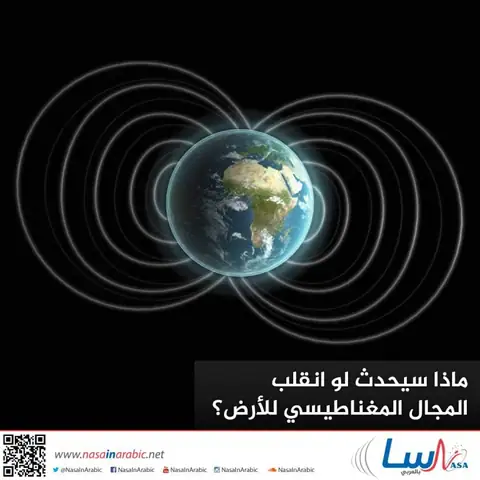
Science news · What would happen if Earth's magnetic field flipped? -
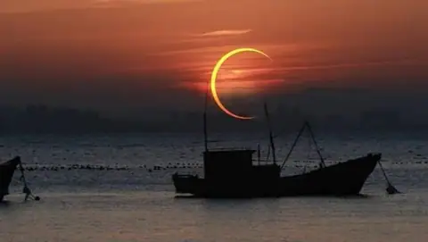
Science news · Where and how to see it: a rare annular solar eclipse next Thursday morning - Science news · The space elevator: science fiction or a feasible dream?
- Lectures and events · Invitation to observe the annular solar eclipse in Salalah, 26 December 2019
- Science news · "By the sky and the night-comer" – video
- Science news · Some Miracles of the Qur’an Relating the Universe : Pulsar
- Science news · Sheikh Mohammed bin Rashid Al Maktoum: "We are a nation whose hope, youth and spirit are renewed"
- Science news · Germany invests 3.3 billion euro in European space exploration and becomes ESA’s largest contributor
- Lectures and events · A special interview with Emirati astronaut Hazza Al Mansouri
- Science news · 2019: an exceptional year for the UAE space sector
November 2019
-
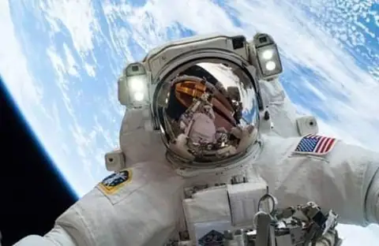
Lectures and events · "Live from space" -
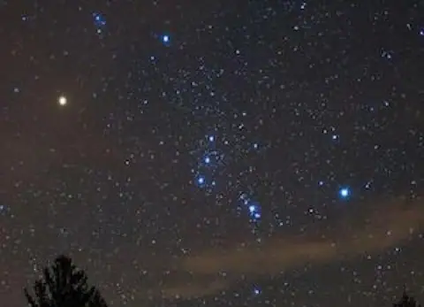
Science news · Orion begins to return to the evening sky -
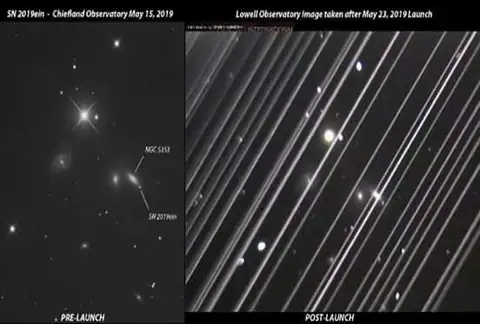
Science news · Starlink seen again - Science news · The transit of Mercury across the Sun from Saudi Arabia, 2019
-
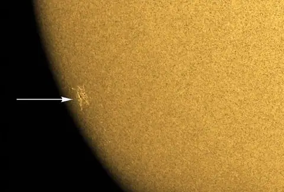
Science news · A new sunspot appears -
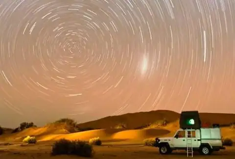
Science news · Photographing star trails -
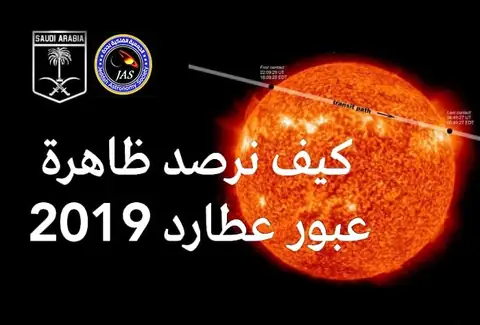
Science news · How to observe the 2019 transit of Mercury -
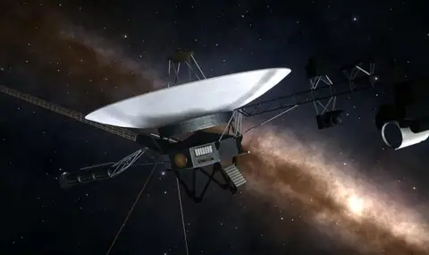
Science news · Voyager 2 sends new data on interstellar space -
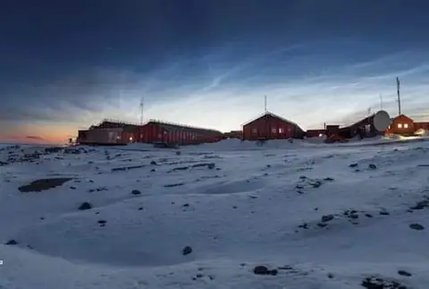
Science news · Electric-blue clouds over Antarctica -
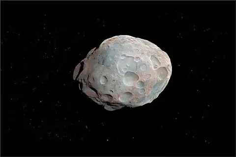
Science news · A small asteroid nearly hit the Earth last Thursday -
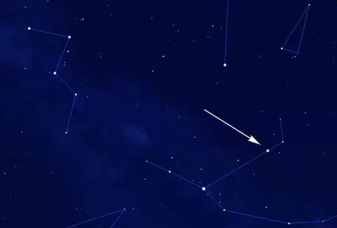
Science news · Algol in Arab skies -
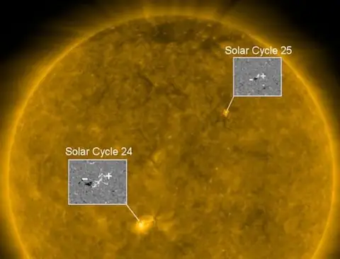
Science news · The first flare of solar cycle 25 -
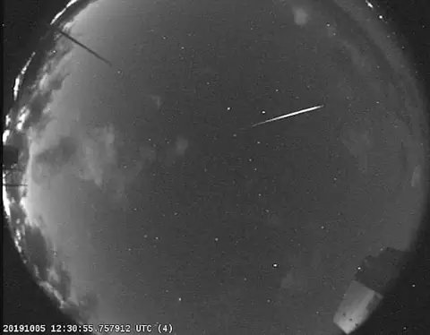
Science news · An unusual fireball -
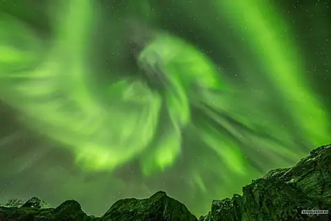
Science news · Bright green auroras -
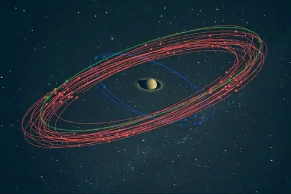
Science news · 20 new moons discovered around Saturn
October 2019
- Science news · A Saudi artist paints Hazzaa Al Mansoori
-
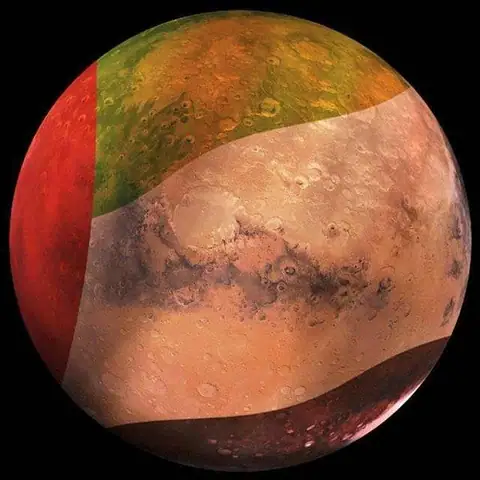
Science news · Sarah Al Amiri: we have reached the last environmental test of the Hope probe - Science news · Kuwait University looks to the sky
- Science news · 11 countries interested in the UAE initiative for Arab space cooperation
-
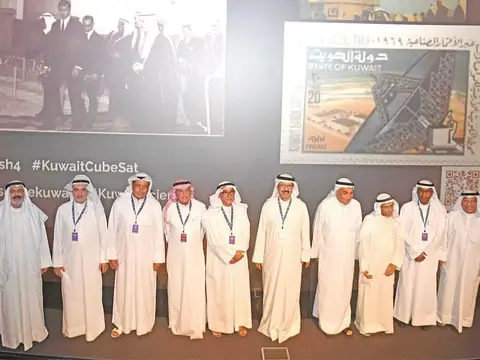
Science news · The Scientific Center holds a symposium on "Space and the GCC states" -
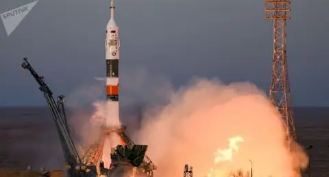
Science news · Russia and Saudi Arabia discuss sending a Saudi astronaut into space - Science news · Russia and the UAE discuss sending a second Emirati astronaut to the ISS
- Science news · During a UAE delegation visit, the Egyptian Space Agency plans to send an Egyptian astronaut to the ISS
- Science news · UAE Space Agency Director General receives the head of the Kuwait Aviation Show 2020 organising committee
- Science news · How the UAE is working to promote international collaboration on space programmes
-
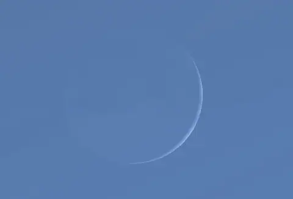
Science news · The crescent of Rabi' al-Awwal graces Arab skies on Tuesday -
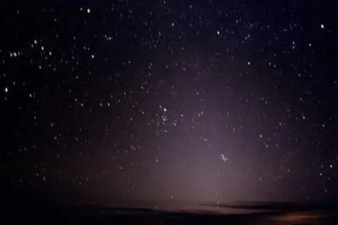
Science news · The zodiacal light graces Arab skies -
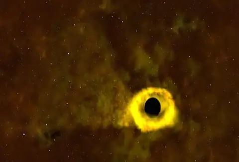
Science news · A black hole observed tearing apart a Sun-sized star -
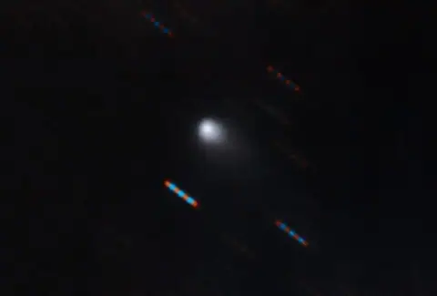
Science news · Cyanogen gas detected in interstellar comet Borisov -
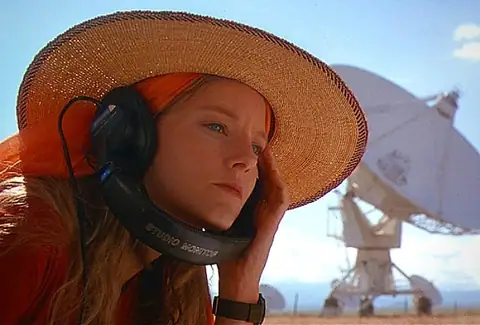
Science news · Aliens may exist, but very far away -
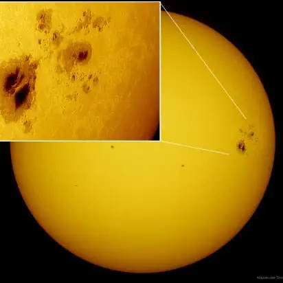
Science news · A rare phenomenon that could plunge the Earth into total darkness – a rumour -
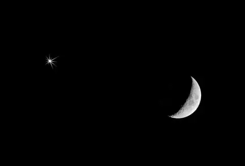
Science news · The Moon in conjunction with the giant of our solar system tonight -
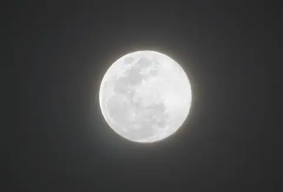
Science news · The full moon tonight -
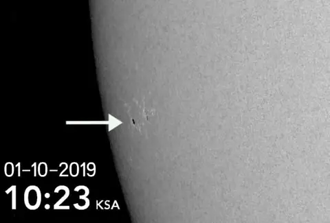
Science news · A new sunspot -
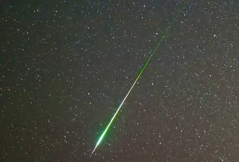
Science news · The peak of the 2019 Draconids on Tuesday -
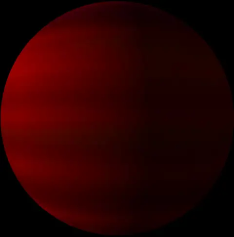
AUASS news · WASP-80: the star system 163 light years from Earth that will bear the names of Jordanian cities and heritage sites - Science news · IAU: Assigned planetary system for Jordan (WASP-80 & WASP-80 b)
-
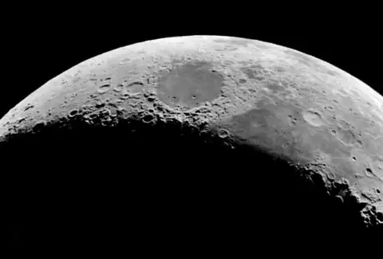
Science news · The "smiling face" on the Moon on Wednesday
September 2019
-
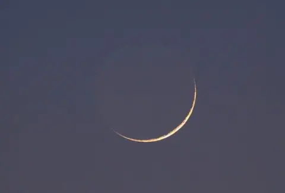
Science news · The crescent of Safar graces Arab skies tonight -
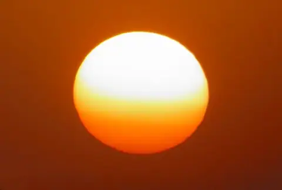
Science news · The 2019 solar minimum is deep! - Science news · A Jordanian space scientist joins the Amazon founder's project to build a station on the Moon
- Science news · MEARIM 2020: Fifth Middle-East and Africa IAU Regional Meeting, 12-15 October, 2020
-
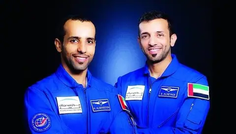
Science news · The UAE flag among the flags of the countries in the 25 September mission -
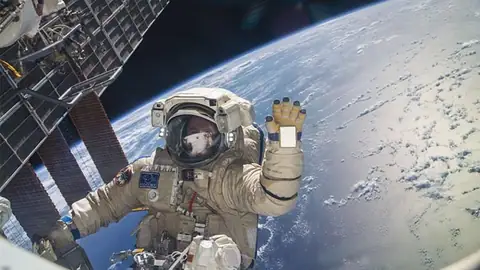
Science news · An explanation of the International Space Station - Science news · KhalifaSat: the Baikonur Cosmodrome
-
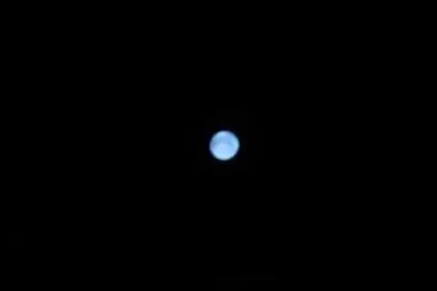
Science news · Neptune at opposition today -
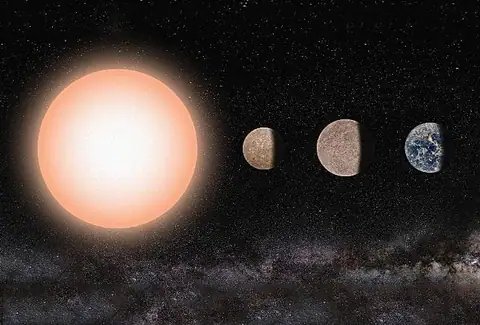
Science news · Three super-Earths discovered -
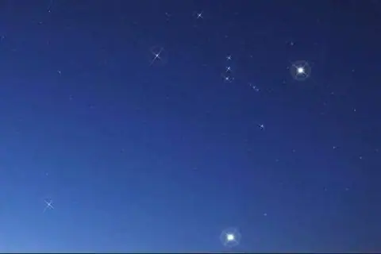
Science news · Orion in Arab skies -
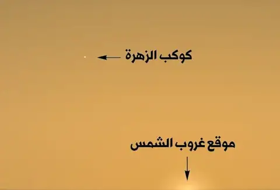
Science news · The "evening star" returns to Arab skies -
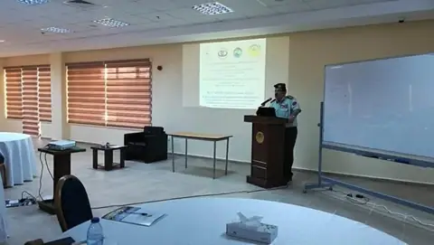
Science news · Opening of the summer school in astrophysics and space science at the Regional Centre -
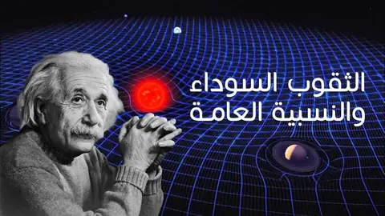
Science news · Translated video (new): black holes and general relativity -
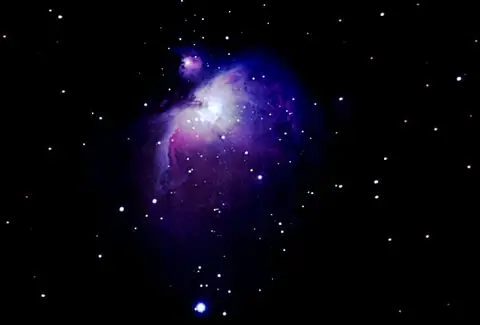
Science news · The Orion Nebula in the sky of Jeddah -
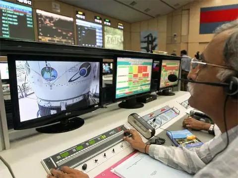
Science news · India loses contact with its lunar lander -
 Science news · 160 years since the Carrington event
Science news · 160 years since the Carrington event
-
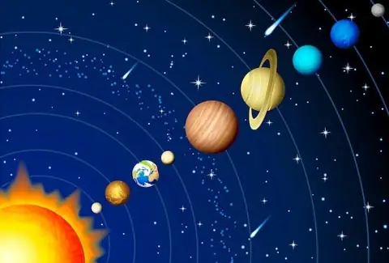
Science news · How big is our solar system? (an educational activity) -
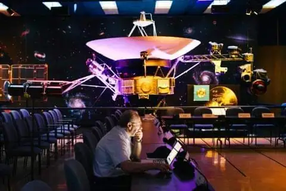
Science news · 42 years since the start of the historic Voyager missions -
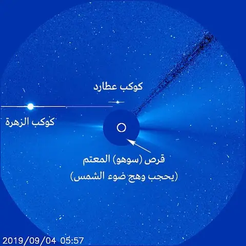
Science news · Jupiter graces the nights of September 2019 -
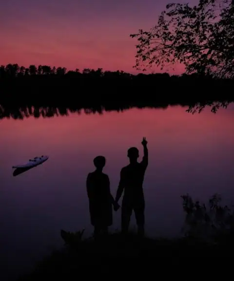
Science news · Look out: purple sunsets -
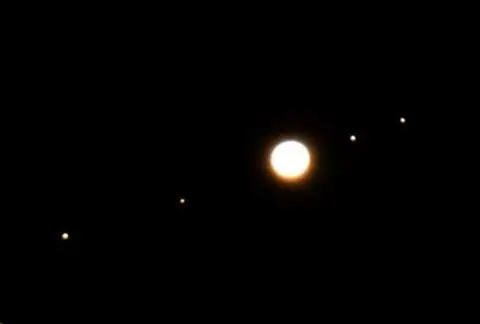
Science news · A triple planetary conjunction today - Science news · Translated video: Battle of the Planets, episode 24, "Vacation on Venus"
August 2019
-
 Science news · A summer without sunspots
Science news · A summer without sunspots
- Science news · Why are sunsets purple?
- Science news · Study: alien life may be more diverse than on Earth
- Science news · September's asteroid will not hit the Earth
- Science news · Orion and Sirius grace the dawn in late August
- Science news · Auroras without a magnetic storm
- Science news · Saturday: the crescent of the Hijri year 1441 graces the sky
- Science news · A gigantic jet in the sky over China
- AUASS news · A letter of thanks from the Al-Shi'ra Astronomy Society to AUASS
- Lectures and events · Graduation of the Young Astronomer course
- Science news · Translated video (new): is the universe expanding or contracting?
- Science news · Update: Mars in conjunction with Venus now
- Science news · A day in the memory of astronomy and space
- Science news · Cosmic image: the outbursts of a newborn star
- Science news · Al Ahbabi attends the closing ceremony of the 2019 Space Studies Program
- Science news · 42 years of the mysterious "Wow!" signal
- Science news · Cassiopeia points the way to Andromeda in Arab skies
- Science news · Once again: volcanic gases reach the upper atmosphere
- Science news · Update: Chandrayaan-2 enters orbit around the Moon
- Science news · Opening of the Regional Centre for Space Science and Technology Education for Western Asia building
- AUASS news · Under one sky, astronomy unites us
- Science news · A solar eruption observed!
- Science news · Study: dark matter may have existed before the Big Bang
- Science news · A beautiful image of a planetary nebula
- Science news · The search for laser signals from alien civilisations begins
- Science news · "Jellyfish" lightning
- Science news · The international celebration of the IAU centenary: 100 Hours of Astronomy ("Astronomy unites us under one sky")
- Lectures and events · Prof. Nidhal Guessoum presents his students' research, some of it published in leading international journals
- AUASS news · Visit of the Algerian astronomy delegation
- Science news · A comet observed falling into the Sun
- Science news · Comet Churi had a temporary moon
- Science news · Update: Chandrayaan-2 on its way to the Moon
- Science news · The full moon tonight
- Lectures and events · Lecture by Prof. Nidhal Guessoum at the Regional Centre
July 2019
- AUASS news · UNOOSA Director Simonetta Di Pippo sends a letter of thanks to the Jordanian government through the Director of the Royal Jordanian Geographic Centre
- Science news · A rocky planet found among three red suns
- Science news · A strange supernova observed!
- Science news · The "symbol of love" leaves the dawn sky
- Science news · India sets off for the Moon
- Science news · The peak of the 2019 Delta Aquariids next Sunday
- Science news · A gold hunter finds something far rarer
- Science news · An asteroid passes near our planet tomorrow, Wednesday
- Science news · A meteor explodes over Canada
- Science news · Cosmic image: a planetary nebula
- Science news · The Moon of Dhu al-Qa'dah at last quarter
- Science news · Did humans really land on the Moon?
- Science news · Jeddah Astronomical Society: a partial lunar eclipse in Saudi Arabia next Tuesday
- Science news · Solar wind strikes Earth's magnetosphere
- Science news · A "skinny" accretion disc around a black hole surprises astronomers
- Science news · The gibbous Moon near Jupiter tonight
- Science news · Update – Eng. Majed Abu Zahra: a G1 geomagnetic storm is possible
- Science news · A coronal mass ejection reaches the Earth!
- Science news · The Sun directly overhead the Kaaba next Tuesday
- Science news · A planetary system with three planets discovered
- Science news · Sprites in the sky over Italy
- Lectures and events · المؤتمر الإقليمي الافريقي الأول 25-29 سبتمبر 2019
- Science news · Vega Rocket Suffers ‘Major Anomaly’ During Launch of UAE Satellite
- Lectures and events · Lecture: "Asteroid exploration"
- AUASS news · From the wonderful sky of Wadi Rum
- Science news · A study in Nature suggests the Milky Way may have formed under "chameleon" models
- Science news · Wild New Paper Claims Our Galaxy Could Have Formed Under Chameleon Theory
- Science news · Saturn close to Earth on Tuesday evening
- AUASS news · Observing the partial lunar eclipse in Irbid on Tuesday, 16 July 2019, at 9 pm
- Science news · The first quarter Moon graces the sky of Dhu al-Qa'dah on Tuesday
- Science news · Jeddah Astronomical Society: the "Lord of the Rings" near Earth on Tuesday
- Science news · A sunspot from the new cycle
- Science news · The Lord of the Rings at opposition
- Science news · Translated video: Solar Eclipses 101
- AUASS news · Observing the partial lunar eclipse (16 July 2019)
- Science news · Lunar Eclipse in Amman 16 July, 2019 Observing the Lunar eclipse from RCSSTE
- Science news · The UAE will launch the Falcon Eye satellite in July
- Science news · UAE set to launch Falcon Eye satellite into orbit
- Science news · A non-repeating fast radio burst pinpointed
- Science news · International Asteroid Day 2019
- Science news · A day in the memory of astronomy and space
- Science news · Jeddah Astronomical Society: the Earth at its farthest from the Sun on Friday
- Science news · Seven years since a meteorite fall was recorded up close in 2012
- Science news · A sunspot from the new solar cycle appears
June 2019
- Science news · An early dark energy model could explain the Hubble tension
- Articles · Model suggests how early dark energy could resolve the Hubble tension
- Science news · The logo of the first Emirati mission to the International Space Station
- Science news · The logo for the first Emirati mission to the International Space Station ISS has been revealed, the design reflects the creativity of the UAE’s youth
- Science news · Jeddah Astronomical Society: a total solar eclipse not visible from Saudi Arabia next Tuesday
- Science news · Translated video: the Moon call, President Richard Nixon, White House 1969
- Science news · A thermal image of the ring system of Uranus
- Science news · New sunspots appear
- Science news · A small asteroid explodes near Puerto Rico
- Science news · Translated video: 50 years since the historic crewed Apollo 11 mission to the Moon, 20 July 1969
- Science news · Translated video: Hubble's scientific revolution
- Articles · This is what it looks like when galaxies are about to die
- Science news · A short video marking 20 years of the XMM telescope, which observes celestial objects in X-rays
- Science news · Big Ideas in Astronomy
- Science news · Book: Big Ideas in Astronomy
- Science news · Study: a huge coronal mass ejection detected from the star HR 9024
- Science news · Mercury in Arab skies tonight
- AUASS news · The arm of the Milky Way
- Science news · The Qatif Astronomy Society organises its comprehensive summer astronomy programme
- Science news · The Qatif Astronomy Society holds a lecture on crescents and prayer times at Al-Zahraa Mosque, Al-Khuwaildiya
- Science news · The day after tomorrow, Saturday, will be the longest day of the year in Kuwait and the Gulf
- Science news · Two Earth-like exoplanets discovered in the Milky Way, 12.5 light years away
- Science news · Mathematicians propose a new form of the periodic table based on chemical bonds
- Science news · what if The Universe Stopped Expanding?
- Science news · New instruments and techniques will search seriously for more planets around Alpha Centauri
- AUASS news · Lecturer: astronomer Marwan Shwaiki – a star's identity card: the properties of stars
- Science news · Did you know Mars has a dust cycle similar to Earth's water cycle?
- Science news · A BBC documentary in Wadi Rum, Jordan, on the conjunction of Mars and Jupiter
- Science news · Explaining an atmospheric phenomenon
- Science news · Sprites in the sky over China
- Science news · Jupiter at its closest to Earth this year
- Science news · The waxing gibbous Moon of Shawwal 1440 in Arab skies
- Lectures and events · Lecture: "Constellations of the southern celestial hemisphere"
- Science news · A new astronomical discovery may help explain the life cycle of galaxies
- Science news · Astrophysicist announces her discovery that could rewrite story of how galaxies die
- Science news · The list of asteroids that could hit the Earth
- Science news · The harm Starlink satellites do to astronomical observation
- Science news · Jupiter at opposition 2019 next Monday
- Science news · 1,824 new supernovae discovered
- Science news · A coronal mass ejection may hit the Earth
- Science news · The peak of the 2019 daytime meteors on Friday
- Science news · Jupiter's Great Red Spot is shrinking
- Science news · Jeddah Astronomical Society: an astronomy trip for children, a Jupiter evening
- Science news · Astronomers' views on sighting the crescent matter and must not be ignored
- Science news · Debate over Eid in the Arab world; Prof. Mimouni: the crescent committee relied on an "illusory sighting", but our Eid was valid
- Science news · Does a large crescent on the first day of the Hijri month prove the month started on the wrong day?
- Science news · Dr. Nadia Bastaki, the first Arab woman specialising in aviation and space medicine
- Science news · From next Ramadan, Makkah's Clock Tower will watch for the crescent
- Science news · NASA will open the International Space Station to tourists from 2020
- Science news · The first quarter Moon graces the Eid sky tonight
- Science news · Three rocky planets discovered around a star visible to the naked eye
- Science news · A Neptune-sized planet with a short orbit discovered
- Science news · Study: hyperactive comets contain ocean-like water
- Science news · The start of the 2019 hurricane season
- Science news · Translated video: the light of the Big Bang
- Science news · The smile of the Eid al-Fitr crescent on Thursday
- Science news · A burning wall of plasma on the Sun
- Science news · The Eid al-Fitr crescent graces the sky tonight
- Science news · A sunspot from the new solar cycle appears
- Science news · 18 small planets discovered beyond our solar system
- Lectures and events · A farewell meeting: the Ramadan crescent near Venus at dawn on Saturday
May 2019
- Articles · O’Neill colonies: A decades-long dream for settling space
- Science news · Princeton physics professor Gerard O'Neill wants to build colonies in space
- Science news · Live: two hours until SpaceX launches 60 satellites
- Science news · Astronomers Discover 18 Earth-Sized Planets Beyond Our Solar System
- Articles · Astronomy is no longer about what we can see. Here’s how we’re sensing the invisible universe
- Science news · The link between the pyramids and the stars
- Lectures and events · The first summer school 2019: "Astrophysics and Space Sciences"
- AUASS news · احمد يستكشف المريخ
- Science news · Mercury and the Pleiades
- Science news · Translated video: is there life on Enceladus?
- Science news · Hubble: a new image of the galaxy NGC 3384
- Science news · Astronomical moments (3)
- Science news · The link between the black hole and the formation of the Milky Way
- Science news · From the Moon to Mars: history repeats itself
- Science news · This month's Moon has completed a quarter of its orbit around the Earth
- Science news · Saudi women in the space field
- Science news · The large sunspot is decaying
- Science news · The "symbol of love" shines on the nights of Ramadan 2019
-
 Science news · Rare blue auroras
Science news · Rare blue auroras
- Science news · A storm over Europe
- Science news · What are the mysterious summer clouds?
- Science news · The green flash of the Sun
- Science news · Quick fact: why can't aeroplanes reach space?
- Science news · Translated video: "The sound of the Sun"
- Science news · India prepares to land near the Moon's south pole
- Science news · The Sun's optical corona
- Science news · Until next year: the brightest star in the sky leaves us!
- Science news · Jupiter graces the nights of Ramadan 2019
- Science news · Possible geomagnetic activity
- Science news · New gravitational waves detected
-
 Science news · Dragon reaches the International Space Station with supplies
Science news · Dragon reaches the International Space Station with supplies
-
 Science news · A very distant lensing galaxy cluster observed
Science news · A very distant lensing galaxy cluster observed
-
 Science news · A new large sunspot
Science news · A new large sunspot
-
 Science news · A huge asteroid will pass safely near Earth on 25 May
Science news · A huge asteroid will pass safely near Earth on 25 May
- Science news · Looking for the Ramadan 2019 crescent today
- Science news · It's back!
- Science news · The peak of the 2019 Eta Aquariids next Monday
- Science news · Sprite lightning seen with the naked eye!
- Science news · Recent images of the Earth
- Science news · When will Ramadan 1440 AH / 2019 begin?
- Science news · New study: Mercury has a solid core
- Science news · Translated video: Exoplanets 101
- Science news · Translated video: Stars 101
April 2019
- Science news · Astronomy & Physics Weekly News for Apr. 27, 2019 || Issue No. 17
- Science news · Study: Pluto's atmosphere expected to collapse by 2030
- Science news · Translated video: a study to understand the magnetic polar cusp
- AUASS news · Astronomy Magazine June 2019
- Science news · The Hubble Space Telescope: one of humanity's greatest achievements
- AUASS news · "Sharjah Space Centre" prepares two satellites
- Science news · Why sin and cos don’t mean anything
- Science news · The Earth escapes a huge magnetic explosion on the Sun
- Science news · Sprite lightning season approaches!
- Science news · Solar wind is on its way
- Science news · 70,000 images of comet Churyumov!
- Science news · The Sun is spotless
- Science news · The peak of the 2019 Lyrids next Monday
- Science news · Study: an interstellar "meteor" struck the Earth in 2014
- Science news · An Earth-sized planet discovered
- Science news · Translated video: the birth of a black hole
- Science news · Translated video: water released from the Moon's surface discovered
- Science news · A pollen corona
- Science news · The Moon near Jupiter tonight
- Science news · The full moon of Sha'ban on Friday
- Science news · Observing the lone sunspot from the Maragha Observatory at Al al-Bayt University
- Science news · Experts predict a long, deep solar minimum
- Science news · Has sunspot AR2738 split into two?
- Science news · The image of a black hole's event horizon and Einstein's relativity
- Science news · Study: nearby rocky planets may be habitable
- Science news · Evidence of "auroral heating" at Jupiter's poles
- Science news · Video: a meteor breaks up in the sky over Russia
- Science news · The first quarter Moon graces the sky tonight
- Lectures and events · Symposium: "Black holes: from theory to the Event Horizon Telescope"
- Science news · What are "ELVES"?
- Science news · The golden stone!
- Science news · Following the large sunspot AR2738
- Science news · The solar wind has arrived
- Science news · A solar eclipse on Mars
- Science news · A "planet-like" object discovered around a white dwarf
- Science news · Solar prominences
- Science news · The first direct image of the dust "torus" of an active galactic nucleus
- Science news · An asteroid passed near Earth without early warning!
- Science news · Clarification: the truth about the "pink moon"
-
 Science news · An innovative method reveals details of the planet HR 8799e
Science news · An innovative method reveals details of the planet HR 8799e
- Science news · The Dog Star and its pup!
- Science news · The crescent of Sha'ban graces Arab skies tonight
- Science news · Petra and Wadi Rum give their names to a star and an exoplanet
- Science news · NASA: India's destruction of a satellite in space endangers the International Space Station
- Science news · Photos of the workshop on global partnership in space exploration and innovation
- Science news · Study: an ancient planetary system discovered
- Science news · A catalogue of habitable zones around stars
- Science news · Hubble: a new image of Messier 11
- Science news · Hubble observes an asteroid with two tails!
- Science news · Astronomy & Physics Weekly News for Mar. 09, 2019 || Issue No. 10
- Science news · Astronomy & Physics Weekly News for Mar. 16, 2019 || Issue No. 12
March 2019
- Lectures and events · The Moon's rotation on its axis
- Lectures and events · Workshop on Global Partnership in Space Exploration and Innovation
- Science news · The solar minimum continues
- Science news · Diamond dust and ice halos
- Science news · Earth Hour 2019
- Science news · What happens when a meteorite falls on a house?
- Science news · NASA: a 360-degree video of the centre of the galaxy
- Science news · International workshop on space exploration opens with more than 35 countries
- Lectures and events · Dr. Osama Shalabiea: "The search for life beyond the solar system"
- Science news · The spring equinox 2019 on Thursday
- Science news · A new sunspot
- Science news · Study: a star cluster may have "ejected" the nearest hypervelocity star from the Milky Way
- Science news · The last supermoon of 2019 on Wednesday
- Science news · A new image of the cluster Messier 28
- Science news · A "crack" in Earth's magnetic field
- Science news · Pi Day (π)
- Science news · The first quarter Moon graces the sky tonight
- Science news · Scientists' attempts to turn back time grow day by day
- Science news · International Astronomical Center: some samples found in the likely meteorite fall area
- Science news · A day to remember
- Science news · A very bright fireball in the sky of the UAE
- Science news · Study: a new estimate of the mass of the Milky Way
- Science news · The Moon in conjunction with Mars tonight
- Science news · A solar flare this morning
- Science news · The Moon's smiling face in Arab skies
- Lectures and events · Live broadcast from space
- Science news · Friday: the crescent of Rajab graces Arab skies
- Articles · NASA posts image of ghostly blue objects, deep in the cosmos
- Science news · Physicists Just Solved a 35-Year-Old Mystery Hidden Inside Atomic Cores
- Science news · Rwanda, OneWeb Launch Satellite ‘Icyerekezo’ To Connect Remote Schools To Internet
- Articles · Where Are All the ‘Sparticles’ That Could Explain What’s Wrong with the Universe?
- Science news · "Rum Sky": a Jordanian project for stargazers and desert camping
- Science news · Pink and green auroras
- Science news · Study: destroying asteroids is harder than we think
- Science news · Observing the analemma in Arab skies
- Science news · A new sunspot
- Science news · The new moon of Rajab on Wednesday
- Science news · Hubble observes the galaxy collision NGC 6052
- Science news · Ultra-high-energy particles discovered from NGC 3079
- Science news · The return of "STEVE"
- Science news · Feeble sunspots appear
- Science news · The zodiacal light, March 2019
- Science news · What’s Up March 2019 by Dalal Allala
- Science news · SpaceX: giant steps towards the future of space
- Science news · Waves of solar wind
- Science news · Lev Landau: Who was the notable physicist and why should we remember him?
- Articles · ‘We’ll die before we find the answer’: Crisis at the heart of physics
- Science news · On the foundations of quantum theory – Badis Ydri
- Science news · Carl Sagan's cosmic calendar
- Science news · Astronomers may have finally connected supernovae and gamma ray bursts
- Articles · 2019 Doomsday Clock Announcement Washington, D.C. January 24, 2019
- Science news · Aristotle’s Physics: A Physicist’s Look
- Articles · “Life is Physics” by Katherine Wright
- Articles · ANOTHER GALAXY WITHOUT “DARK MATTER”
- Articles · The North Magnetic Pole’s Mysterious Journey Across the Arctic
- Articles · Harvard’s top astronomer says an alien ship may be among us — and he doesn’t care what his colleagues think
- Science news · Are we alone in the universe?
- Science news · Israel’s 1st Moon Lander: The SpaceIL Beresheet Lunar Mission in Pictures
- Lectures and events · Lecture on astronomy and astrology between science and philosophy
- Science news · 30 days without sunspots
- Science news · Asteroid 2010 GD37 hitting Earth is just a rumour
- Science news · Image archive of the Russian satellite Electro-L2
- Science news · Happening now: a solar wind storm
- Science news · "The old woman's cold"
February 2019
- Science news · A mystery on the ice!
- Science news · The Earth from a Russian satellite
- Science news · Why does February have only 28 days?
- Science news · The Moon in conjunction with Jupiter at dawn on Wednesday
- Lectures and events · "Public call" to name Jupiter's new moons
- Science news · The "Ganymede" telescope sees "first light"
- Science news · The Mohammed bin Rashid Space Centre will announce tomorrow the launch date of the first Emirati astronaut
- Science news · Pollen corona!
- Science news · It's back: a large coronal hole
- Science news · Study: the geocorona extends beyond the Moon
- Science news · A solar eruption
- Science news · The Moon illusion!
- Science news · Uranus 101
- Articles · Astronomers Just Found 300,000 Hidden Galaxies in Just a Tiny Patch of Sky
- Science news · Geomagnetic activity today
- Science news · A day to remember
- Science news · NOAA announces the arrival of El Niño
- Science news · Hani Al-Dhulaie's paper at the scientific miracles conference in Baghdad
- Science news · Our view of the universe
- Science news · The biggest supermoon of 2019 in Arab skies on Tuesday 19 February
- Science news · Study on the possibility of "very recent" volcanic activity beneath the surface of Mars
- Science news · Six years since the Chelyabinsk asteroid event
- Science news · "The Heart Nebula"
- Science news · Surprise: Ultima Thule looks like a pancake!
- Science news · The first quarter Moon graces the sky tonight
- AUASS news · Dr : Awni khasawneh chairing The First meeting of the Working Group on a “Space2030”
- AUASS news · Jordan chairs the meetings of the Space2030 working group
- Science news · Study: ocean surfaces will change colour by the end of this century
- Science news · Complex organic molecules found around V883 Orionis
- Science news · Our planet from space
- Science news · Study: solar magnetic waves behave differently than thought
- Science news · Tuesday: a visitor from beyond the Kuiper Belt in Arab skies
- Science news · Cirta Sciences 11 competition – Sirius Astronomy Association
- Science news · A solar prominence observed this morning
- Science news · The Sun without spots!
- Science news · The International Astronomical Center in Abu Dhabi breaks the Islamic world record for the youngest crescent photographed
- Science news · A dwarf spheroidal galaxy discovered in the backyard of the Local Group
- Science news · Chinese New Year 2019 today
- Science news · The best image yet of asteroid Bennu
- Science news · A day to remember
January 2019
- Lectures and events · Lecture by Prof. Osama Shalabiea: "Radio astronomy, an eye on the invisible universe"
- Lectures and events · Lecture on the space environment and future challenges by Dr. Osama Shalabiea
- Science news · Filming "The Martian" in Jordan
- Science news · Was the Sun the first star created?
- Science news · The 33rd anniversary of the Challenger disaster – Eng. Majed Abu Zahra
- Science news · A meteorite at 61,000 km per hour hits the Moon
- Science news · How planets are born – translated by Eng. Majed Abu Zahra
- Science news · Phobos: the doomed moon of Mars
- Lectures and events · Public invitation to the lecture "Star formation, evolution and structure" by Prof. Osama Shalabiea, 27 January 2019
- Lectures and events · Public invitation to the lecture "The space environment and current challenges" by Prof. Osama Shalabiea, 28 January 2019
- Lectures and events · Public invitation to the lecture "Radio astronomy: an eye on the invisible universe" by Prof. Osama Shalabiea, 29 January 2019
- Science news · Swirls and colours on Jupiter from Juno
- Science news · The Parker probe against the Perseid meteors
- Science news · The aurora and a meteor's flash
- Science news · Mission to the Sun
- Lectures and events · Invitation to Scientific lectures provided by Prof. Osama Shalabyeh
- Science news · The alleged "killer asteroid" hitting Earth in early February 2019
- Science news · The first "supermoon" of 2019 on Sunday
- Science news · The brightest quasar of the early universe discovered
- Science news · The Moon near Mars today and tomorrow
- Science news · The longest synodic lunar month of 2019 begins today
- Science news · The best image ever of the R Aquarii system
- Science news · The crescent of Jumada al-Ula graces the sky of Saudi Arabia tonight
- Science news · "A day to remember"
- Science news · "Winter 2019"
- Science news · An asteroid with a moon flies near Earth
- Science news · A pink aurora graces the polar sky
- Science news · The first evidence that dark matter can be heated
- Science news · The best image ever of the Triangulum galaxy
- Science news · TESS discovers its third small planet beyond the solar system
- Science news · The new year of the Julian calendar begins on Monday
- Science news · A small asteroid passes close to Earth
- Science news · The sun pillar phenomenon
- Science news · Observing a faint object near Sirius tonight
- Science news · Muasher and Al Ahbabi discuss cooperation in space science
- Science news · I Know you are tired
- AUASS news · Al Ahbabi visits the Regional Centre for Space Science and Technology Education in Amman
- Science news · Hubble observes "Herbig–Haro" objects
- Articles · Ten Of The Best Books About Astronomy, Physics And Mathematics Of 2018
- Science news · Who is Dr. Eng. Mohammed Nasser Al Ahbabi?
- Science news · The moment of China's "historic" landing on the Moon
- Lectures and events · Public invitation
- Science news · Saudi Arabia successfully launches the high-resolution imaging satellites SaudiSat 5A and 5B
No posts of this type in this year.